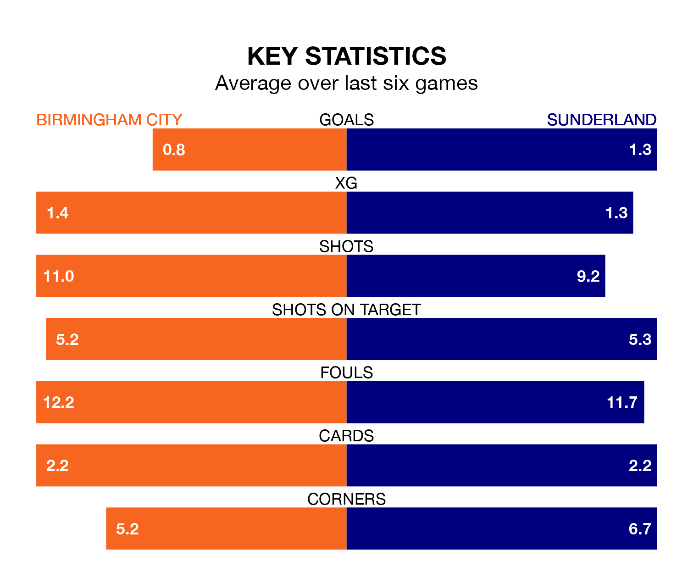

Sunderland travel to Birmingham City on Saturday in EFL Championship.
The visitors come into the game on the back of a defeat in their last match, having lost to Huddersfield Town 1-0 away.
The Blues, meanwhile, won their last match, 1-0 against Blackburn Rovers, with their goal scored by Andre Dozzell.
In the last 10 years, Birmingham and Sunderland have played each other on six occasions. Birmingham won one of them, Sunderland four, and they drew once.
On average, the Blues scored 1.2 goals and the Black Cats 2.0 in those matches.
Their last meeting was on November 11, when Sunderland won 3-1 at home.
With 35 goals in 31 games so far this season, Birmingham are scoring at below the league average rate with 1.1 goals per game. And they are conceding more than average, letting in 47 goals at a rate of 1.5 per game.
Sunderland, meanwhile, are average scorers, with 1.4 goals per game. They have conceded 1.1 goals per game.
In Jack Clarke, the Black Cats have one of the league's most on-form strikers so far this season. He has notched 14 goals in 32 appearances, to sit fifth in the scoring charts.
His goal rate of one every 203 minutes is quicker than that of Jay Stansfield, City's top scorer with a goal every 263 minutes, and a total of eight goals in 28 games.
The Blues are 18th in the table after 31 games, of which they have won nine and drawn eight, earning 35 points.
The visitors are eight places ahead of the home team in 10th, with 14 wins and five draws putting them on 47 points.
Birmingham are in mixed form in EFL Championship, with two wins and a draw from their last six games.
And also with two wins and a draw over that period, Sunderland's form is identical – they have both taken seven points from 18.
Updated: 12:06 (UTC), 15/02/24